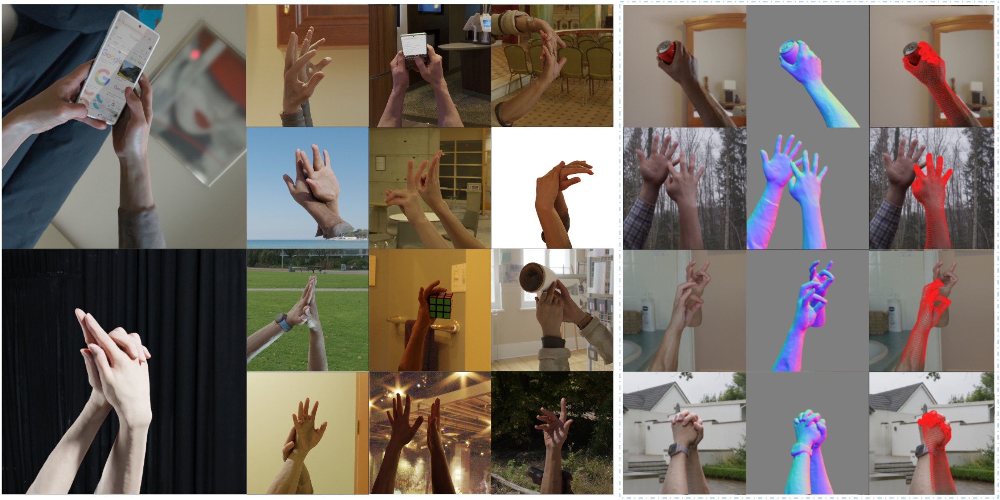
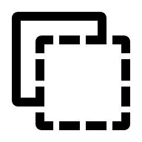

VEPHand delivers high-fidelity, versatile digital hands at scale. The left panel showcases photorealistic renderings from our large-scale dataset, demonstrating robustness across diverse scenarios including complex single-hand poses, intimate two-hand interactions, and natural hand-object manipulations (e.g., using a phone, grasping a can). The right panel (blue dashed box) provides a technical visualization of our pipeline’s accuracy: for each example, we show the rendered appearance, the detailed surface normals recovered by our neural reconstruction, and the precise alignment of our volumetric registration model (red wireframe overlay) to the captured performance.
Robust, high-fidelity 3D hand capture, while fundamental to digital human creation, remains challenging with practical multi-view systems that balance rich photometry with the geometric ambiguities of reconstruction arising from limited viewpoint density. This paper presents an end-to-end pipeline for dynamic hand performance capture and registration, specifically designed for view-efficient setups (~20 views). We address key challenges with two primary innovations. First, to overcome reconstruction difficulties like limited view overlap and background clutter, our mask-free neural method robustly extracts detailed hand geometry and appearance from unmasked images using scene parameterization and scenario-specific density regularization. Second, addressing registration challenges such as accurately capturing non-linear skin deformations and ensuring plausible results during severe self-contact, we propose a physics-inspired framework. It aligns reconstructions to a personalized hand model by optimizing intrinsic volumetric offsets within its canonical tetrahedral mesh, alongside pose parameters. This approach, supported by robust losses and optimization, captures fine surface deformations, ensures plausible results under severe articulation and self-contact, and demonstrates strong tolerance to input noise. We demonstrate the scalability and robustness of our automated pipeline on an extensive dataset of over 12,000 sequences, from which we also derive a large-scale, high-quality synthetic 2D/3D hand dataset for training downstream tasks. This showcases its effectiveness for single hands, intricate two-hand interactions, and natural hand-object manipulations. Our method achieves state-of-the-art reconstruction fidelity in view-efficient, unmasked scenarios and highly accurate registration.

Zhengyang Shen, Kai-Hung Chang, Erroll Wood, Deying Kong, Bo Peng, Timo Bolkart, Jinlong Yang, Bowen Zhao, Danhang Tang, Sasa Petrovic, Emre Aksan, Jérémy Riviere, Vassilis Choutas, Delio Vicini, Jay Busch, Shichen Liu, Zhe Cao, Hugh Liu, JingJing Shen, Jonathan Taylor, Mingsong Dou. VEPHand: View-Efficient Photometric Hand Performance Capture at Scale. arXiv preprint arXiv:2606.15966, 2026.
@article{Shen2026VEPHand,
title = {{VEPHand}: View-Efficient Photometric Hand Performance Capture at Scale},
author = {Zhengyang Shen and Kai-Hung Chang and Erroll Wood and Deying Kong and Bo Peng and Timo Bolkart and Jinlong Yang and Bowen Zhao and Danhang Tang and Sasa Petrovic and Emre Aksan and J{\'e}r{\'e}my Riviere and Vassilis Choutas and Delio Vicini and Jay Busch and Shichen Liu and Zhe Cao and Hugh Liu and JingJing Shen and Jonathan Taylor and Mingsong Dou},
journal = {arXiv preprint arXiv:2606.15966},
year = {2026},
}